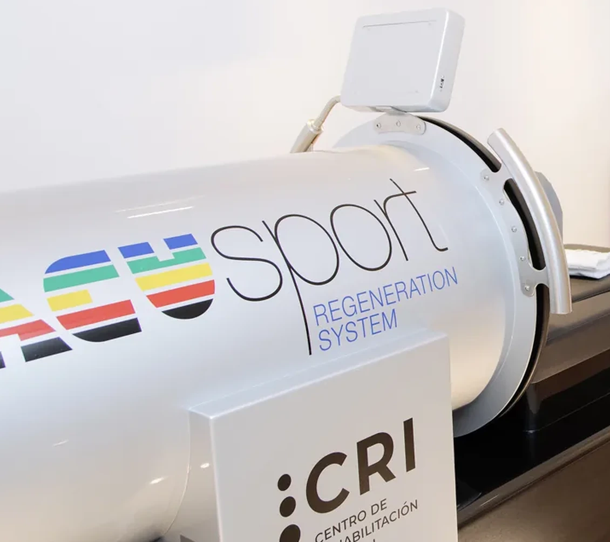
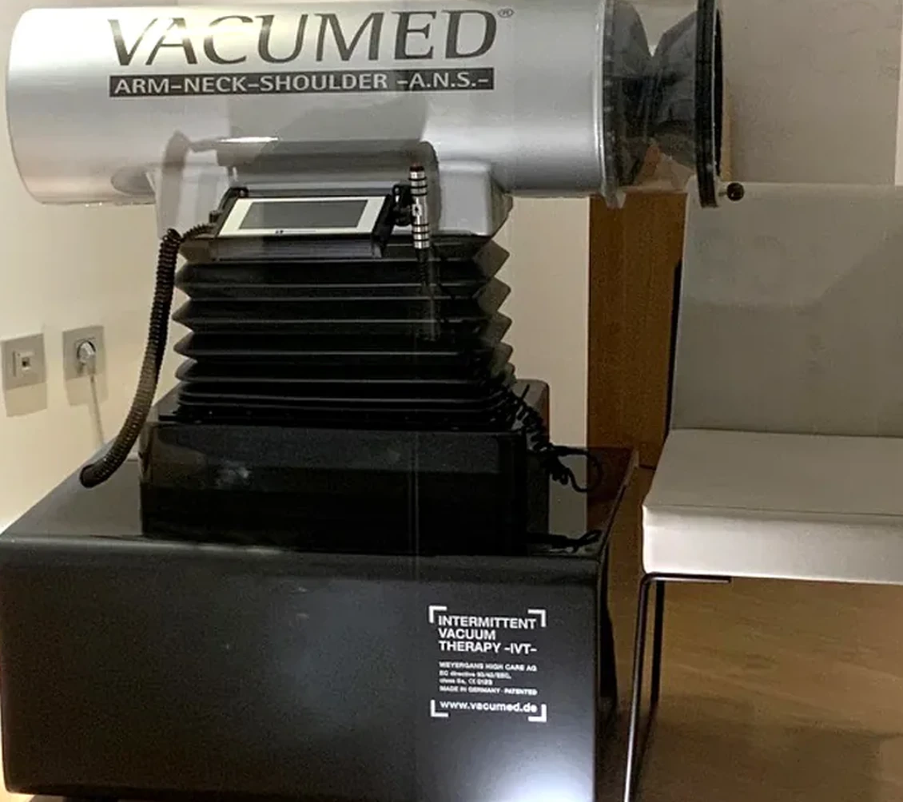
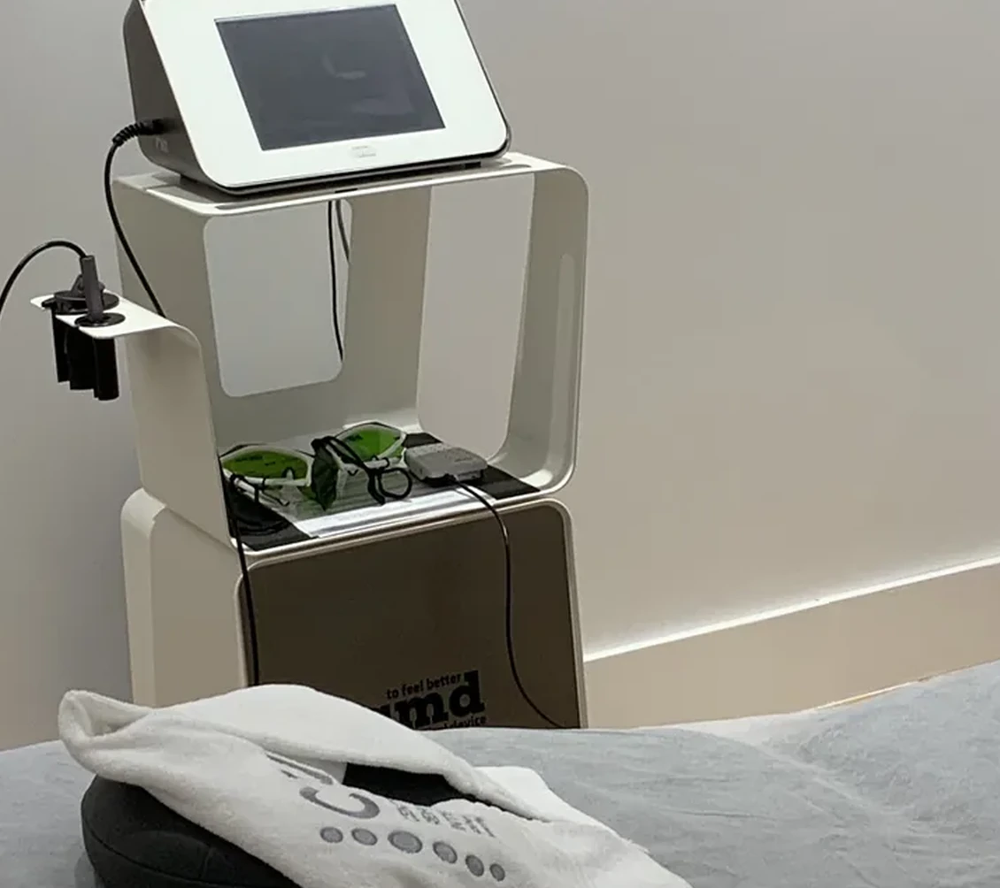
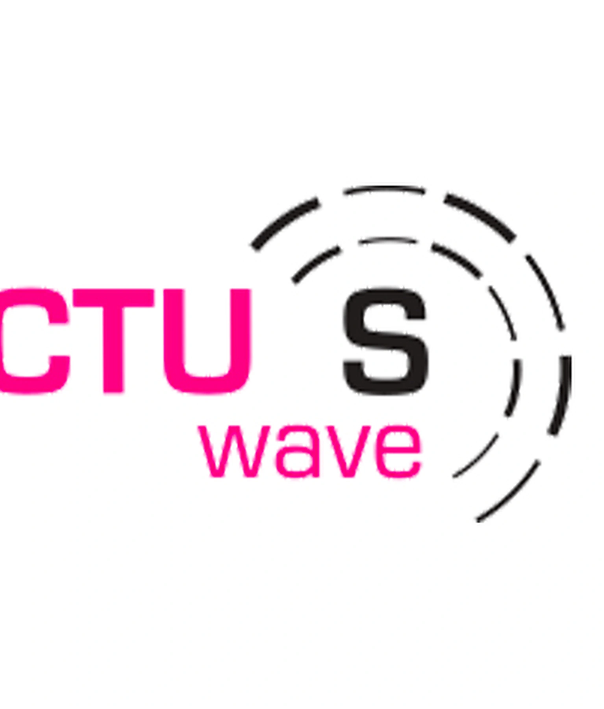
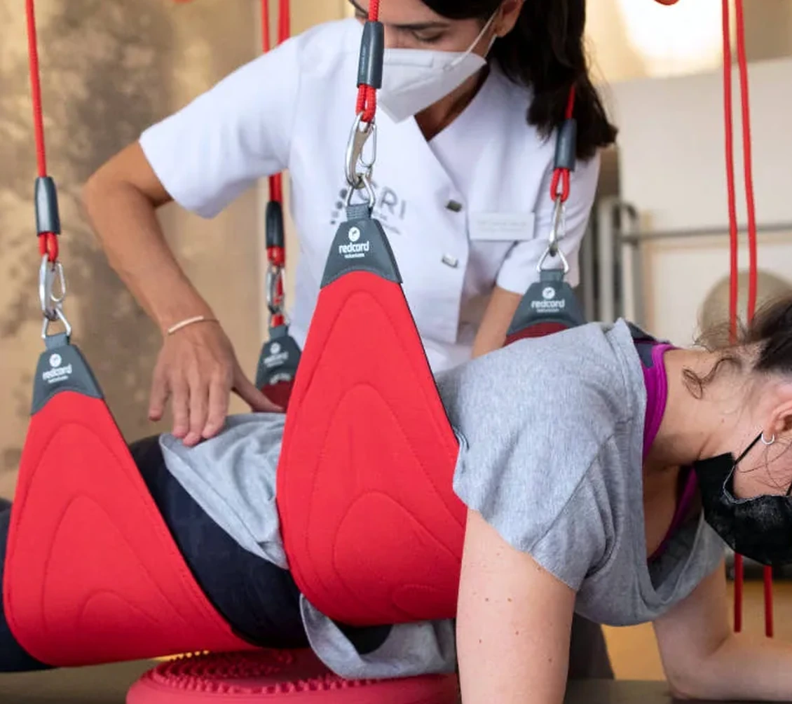
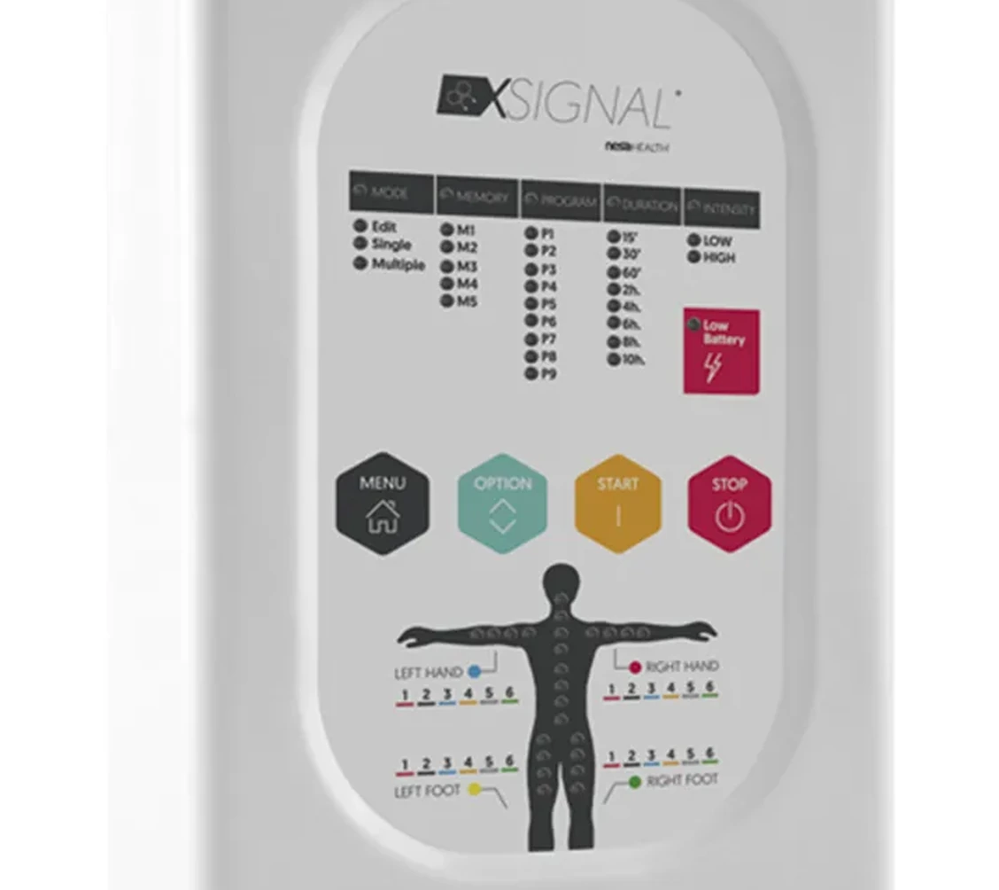

Recuperación
Vacusport
Aplicación orientada a recuperación postraumática, deportiva y postoperatoria, según valoración profesional.
Seleccionamos cada tecnología por lo que aporta al diagnóstico, al tratamiento y al seguimiento, siempre dentro de un plan individualizado.
Análisis no invasivo de la columna, la postura y el movimiento. Ayuda a detectar asimetrías y a medir la evolución sin radiación.

La información obtenida se integra con la exploración clínica para orientar el tratamiento y comparar resultados a lo largo del proceso.
Tecnología MBST® utilizada en indicaciones musculoesqueléticas seleccionadas. El tratamiento es abierto, silencioso y no invasivo.

El protocolo y el número de sesiones se definen tras la valoración del profesional, según la localización, el tipo de lesión y los objetivos del paciente.
La terapia de vacío intermitente alterna fases de presión y descompresión para apoyar la circulación, el drenaje y la recuperación en casos indicados.

Aplicación orientada a recuperación postraumática, deportiva y postoperatoria, según valoración profesional.

Terapia de vacío adaptada a brazo y mano para indicaciones circulatorias y de recuperación seleccionadas.
Herramientas que permiten modular la intervención según el tejido, la fase del proceso y la tolerancia del paciente.

Láser terapéutico con diferentes modos de emisión y control térmico.

Radiofrecuencia aplicada en fisioterapia, rehabilitación, dolor y suelo pélvico.

Ondas de choque para indicaciones agudas y crónicas dentro de un protocolo clínico.

Sistema de suspensión que facilita el trabajo neuromuscular, el control del movimiento y la progresión del ejercicio con cargas ajustables.

Tecnología de impulsos eléctricos coordinados que puede utilizarse como complemento al tratamiento para modular dolor, descanso y recuperación, siempre tras valoración profesional.
Te orientamos hacia la especialidad y el profesional más adecuados para tu caso.